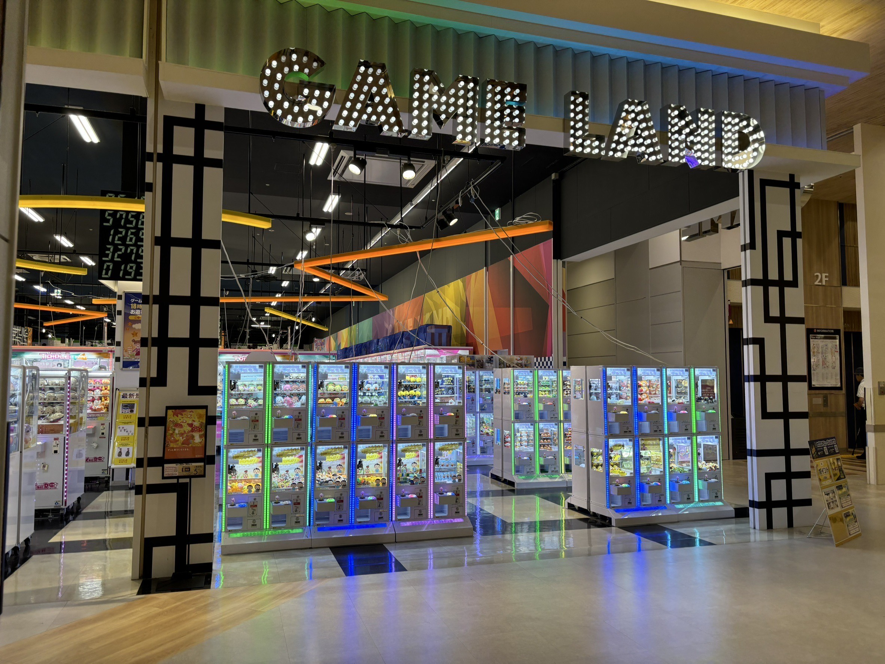
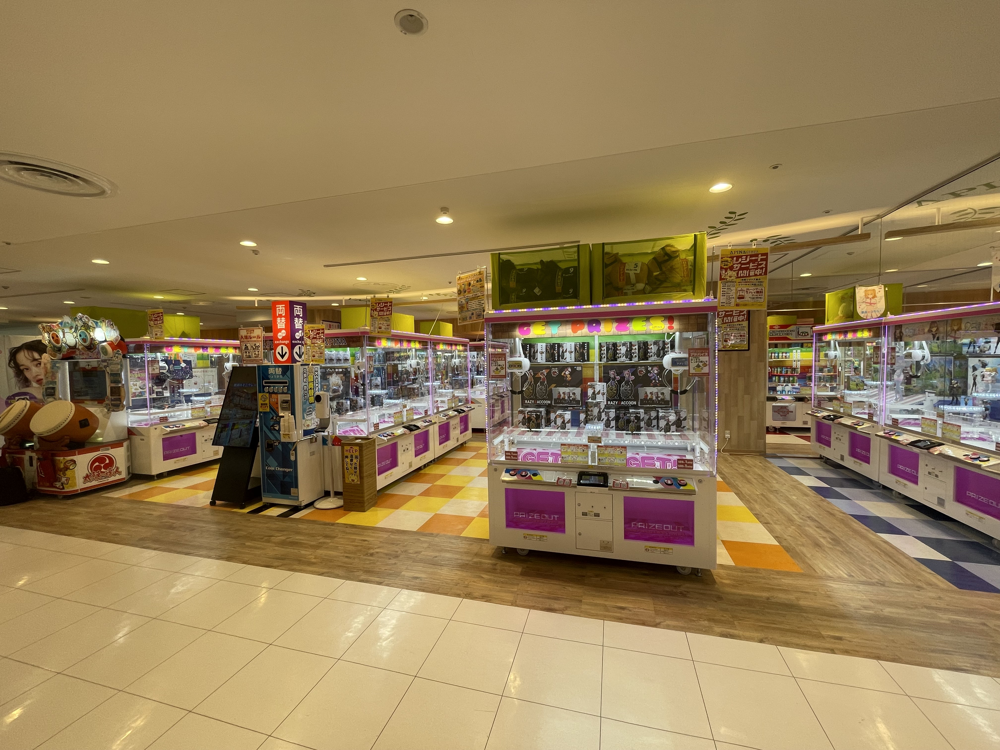
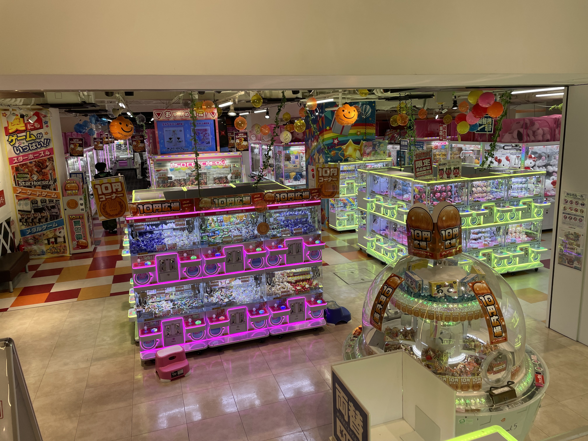

新京成線 新津田沼駅北口から直結
イオンモール津田沼の二階にあるゲームセンターです。
ここはクレーンゲームのラインナップがとても多いので1位になりました。クレーンゲームのほかにも音ゲー、格ゲーも奥にあります。
隣のコーナーにはガチャガチャやキャラクターのグッズ売り場などがあり、そちらも充実しています。

JR津田沼駅北口から徒歩2分
viitの3階に位置します。
アピナ津田沼ではUFOキャッチャーが多く、アーケードのゲームが多くありました
また、女の子に人気なプリクラの機械も多くありました。平日は多くの学生でにぎわっていたのでぜひ行ってみてはいかがでしょうか

新津田沼駅より徒歩1分
新津田沼駅改札を出て正面階段を降りて横断歩道を渡ったら到着します。
一階は小さい小物系のUFOキャッチャーが多くあります。地下に階段を下っていくと大きいUFOキャッチャーがあります。
奥の方に少しメダルゲームのコーナーもあります。幅広い年齢の人が楽しめます。